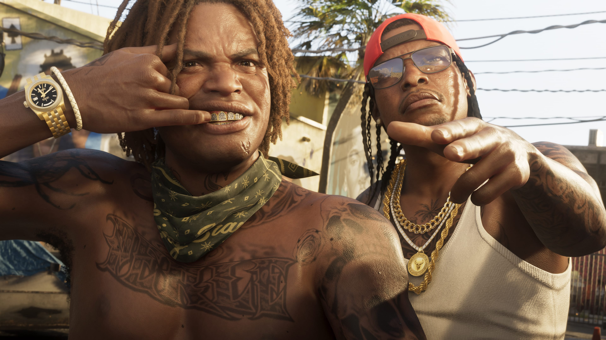
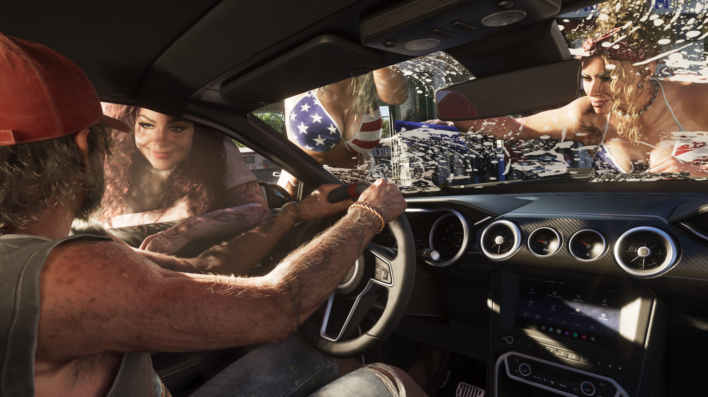

ANALYSIS · LEONIDA
Beyond Vice City: how six regions could change exploration in GTA VI
Our original analysis of how the city, islands, wetlands, industry and mountains could transform the way players cross Leonida.
October 4, 2026The latest GTA VI updates in one place, prioritising official information and separating confirmed facts from rumours.
Our original analysis of how the city, islands, wetlands, industry and mountains could transform the way players cross Leonida.
October 4, 2026
Leonida will feature more than 170 species alongside localized storms, tropical storms and hurricanes.
September 29, 2026
Eight real secrets across seven mainline GTA games, with screenshots and location tips.
September 23, 2026
Seven GTA games, from PS1 to GTA V on PS5: cultural impact, sales milestones and industry changes.
September 22, 2026Rockstar's Extended Look shows new Vice City and Leonida scenes, combat, driving and activities.
August 27, 2026
Rockstar expanded the official GTA VI media gallery to 99 screenshots.
September 2, 2026
The special Netflix debut generated huge attention.
September 1, 2026PlayStation has revealed a limited-edition DualSense inspired by GTA VI.
September 3, 2026
The Extended Look highlights more side activities and systems.
September 4, 2026Rockstar continues to list November 19, 2026 as the official release date.
September 7, 2026